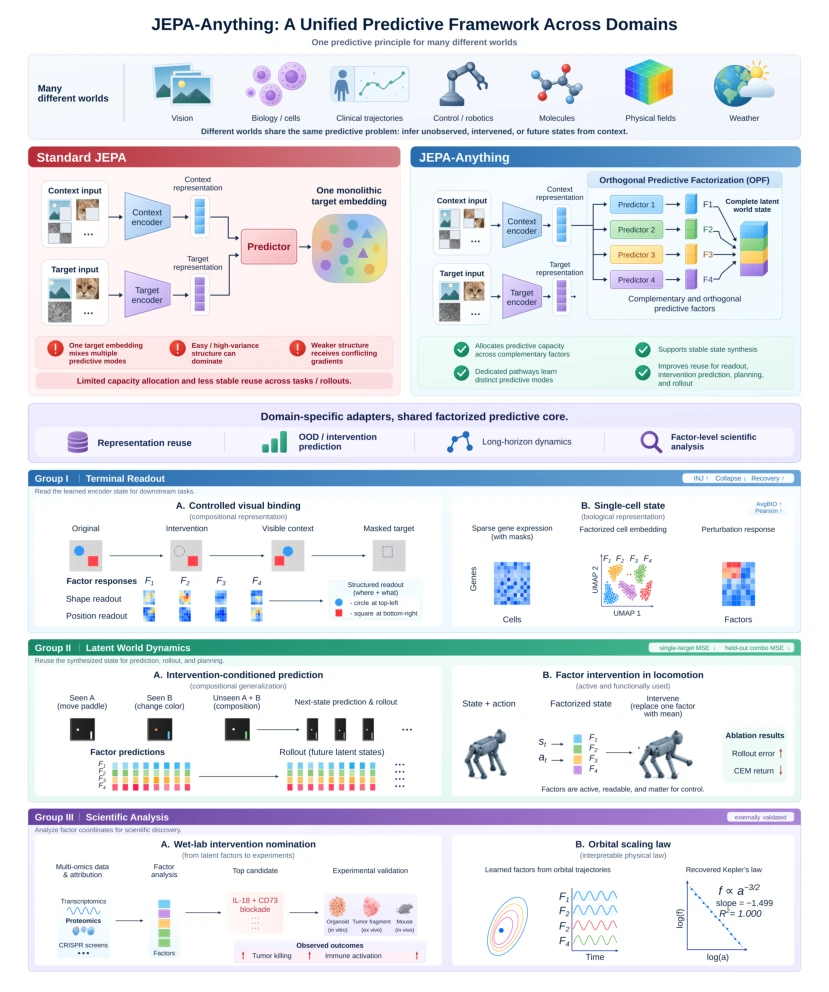
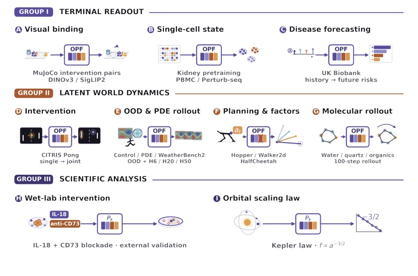
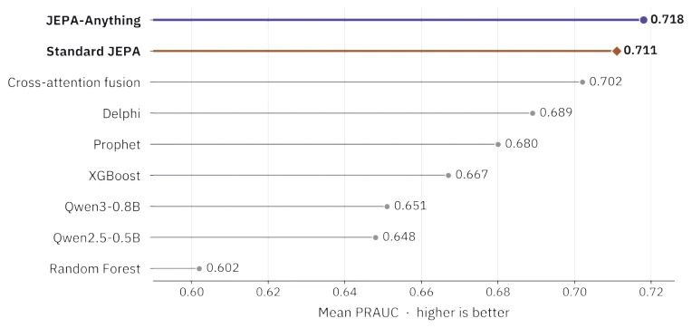
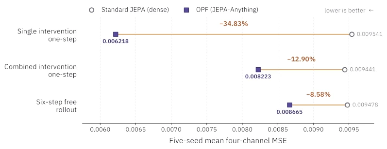
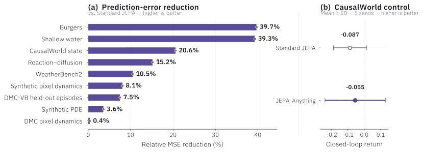
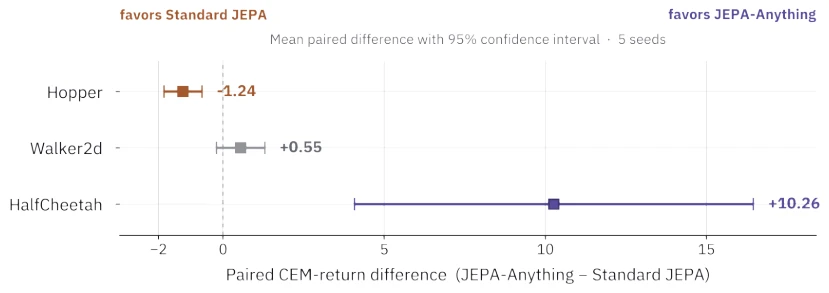
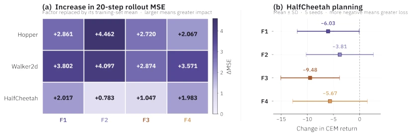
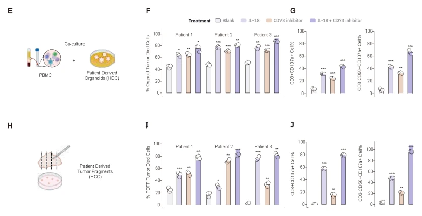
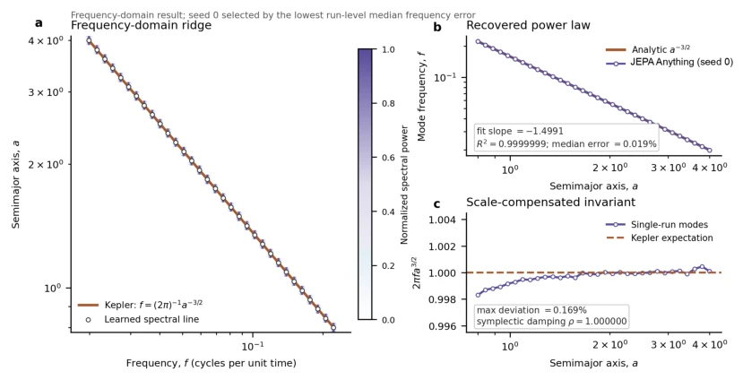

The title "Anything" sounds like a universal adhesive, but it is actually a factorization upgrade of JEPA. This architecture is clever, decomposing a single target embedding into orthogonal factors to prevent high-variance noise from hijacking optimization resources, effectively addressing the capacity allocation bottleneck of JEPA [3]. The cross-modal capabilities are impressive, covering vision, biology, and physical laws, yet the term "universal" appears somewhat exaggerated in the context of scientific discovery. The biological wet experiment validation is rigorous, though whether the factor configuration is truly "domain-agnostic" depends on specific scenarios. Overall, it is a competitive variant within the JEPA family, suitable for multi-task learning, but one should not expect it to solve all world modeling problems, as physical laws cannot be simply replicated through casual learning, and computational overhead may increase with the number of factors, potentially amounting to using a cannon to kill a chicken.
World models aim to predict unobserved consequences, yet existing JEPA [3] employs a single target embedding, which easily leads to high-variance structures dominating optimization and causes gradient conflicts in weak structures. Prediction structures vary significantly across different domains (vision, biology, control), making a single interface difficult to adapt. For instance, vision focuses on spatial transformations, biology on cellular responses, and physics on field dynamics. Existing methods lack a unified framework to organize prediction states of different structures, resulting in difficulty with cross-domain generalization. A unified interface is required that can allocate prediction capacity and support factor-level analysis, connecting world modeling with intervention and scientific discovery, thereby avoiding reconstruction tasks over-emphasizing high-variance directions and failing to capture potential predictable structures.
Overall workflow: Domain Adapter converts observations to Tokens -> Context encoding $z_c$ -> Target encoding $z_t$ (EMA) -> OPF decomposition -> Prediction -> Synthesis. Core innovations: 1. Orthogonal Prediction Factorization (OPF), introducing $K$ projectors $P_k$ to decompose the target into orthogonal subspaces, where each subspace has an independent predictor. 2. Orthogonality loss, enforcing orthogonality between subspaces of factors to prevent redundancy. 3. Factor activity regularization, ensuring each factor coordinate remains active to prevent collapse. 4. Pseudo-inverse synthesis, recombining predicted factors into a complete state. During training, Base Loss and OPF Loss are combined, supporting both Representation Learning and Dynamic Prediction modes. Interaction between the online encoder and EMA target encoder ensures states are reusable and stable.

Figure 1 | Overview of JEPA-Anything. Upper section: Diverse domains share the same predictive problem: inferring unobserved, intervened, or future states from context. Standard JEPA mixes multiple predictive modes in a monolithic target embedding. In contrast, JEPA-Anything uses orthogonal predictive factorization (OPF) to allocate predictive capacity across complementary, orthogonal factors, each with a dedicated predictor, and synthesize a complete latent world state. The shared factorized core supports representation reuse, out-of-distribution and intervention prediction, long-horizon dynamics, and factor-level scientific analysis. Lower section: Three evaluation groups illustrate these capabilities. Group I (terminal readout) examines controlled visual binding and single-cell state re

Figure 2 | Scenario atlas for JEPA-Anything. The layout follows the paper’s three evaluation groups: terminal readout, latent world dynamics, and scientific analysis. Domain-specific contexts and outputs are connected through the same factorized predictive-state interface; Group III retains the learned factor coordinates for external biological validation and physical-law analysis.
Covers 7 domains: vision, biology, clinical, control, molecular, physical field, and weather. The baseline is standard JEPA with matching parameters. Metrics include MSE, PRAUC, cell clustering AvgBIO, etc. JEPA-Anything comprehensively outperforms JEPA on 10 dynamics tasks, with intervention prediction error reduced by 34.8%. Molecular simulation error is the lowest. Biological experiments verified intervention nomination in organoids, and physical experiments recovered the slope of Kepler's laws. Ablation studies show orthogonality is crucial for stable synthesis. Specific tasks include MuJoCo visual binding, scGPT single-cell, GPT-2 clinical prediction, and CITRIS intervention tasks, demonstrating the advantage of factorization design in long-horizon dynamics.

Figure 3 | Broad-spectrum prediction of more than 1,000 future clinical events. Methods are ranked by mean PRAUC using the same cohort split and event vocabulary; higher is better.

Figure 4 | Intervention-conditioned prediction and free rollout on CITRIS Interventional Pong. Lower four-channel MSE is better. Points show means over five paired seeds; annotations give the reduction computed from the reported means.

Figure 5 | Results from the ten-task matched dynamics benchmark. Panel (a) shows the relative MSE reduction of JEPA-Anything versus standard JEPA, computed from the reported five-seed means for the nine prediction tasks. Panel (b) shows CausalWorld closed-loop control return as mean ± sample standard deviation over five seeds; higher return is better.

Figure 6 | Capacity-matched continuous-control planning. Squares show the mean paired CEM-return difference between JEPA-Anything and standard JEPA over five training seeds; error bars show 95% confidence intervals. Positive values favor JEPA-Anything.

Figure 7 | Factor-wise functional interventions. Each factor is replaced by its training-set mean throughout evaluation. Panel (a) gives the increase in 20-step rollout MSE. Panel (b) gives the HalfCheetah CEM-return change as mean ± sample standard deviation over five training seeds.

Figure 8 | Selected wet-lab results in patient-derived hepatocellular carcinoma organoids and tumor fragments. Across three organoid specimens and three tumor-fragment specimens, the IL-18 plus CD73 blockade combination showed the strongest tumor-cell killing among the tested conditions, together with increased immune-cell activation. Colors identify blank control, IL-18, CD73 inhibition, and the combined intervention.

Figure 9 | A physical-law diagnostic based on predictive latent modes. In a JEPA-Anything run, the learned spectral modes recover the Keplerian ridge 𝑓= (2𝜋)−1𝑎−3/2 with fitted slope −1.4991 and 𝑅2 = 0.9999999.